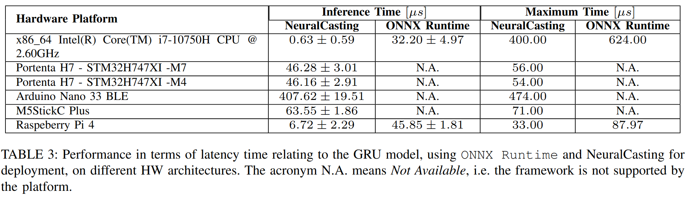
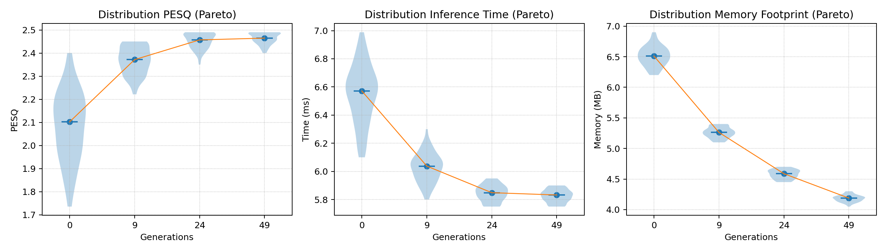

Publications
Selected research contributions in TinyML and embedded AI
Efficient Detection of Microplastics on Edge Devices with Tailored Compiler for TinyML Applications
Published in IEEE Access, 2025

| Model | Precision | Recall | F1-score | Accuracy |
| MLP FP32 | 99.10% | 99.00% | 99.00% | 99.10% |
| MLP INT8 | 98.80% | 98.80% | 98.80% | 98.80% |
| GRU FP32 | 99.20% | 99.20% | 99.20% | 99.20% |
| GRU INT8 | 99.10% | 99.10% | 99.10% | 99.10% |
| Model | Device | TensorFlow Lite Micro | ONNX Runtime | NeuralCasting |
| MLP INT8 | STM32H7 | 0.25 ms | 0.31 ms | 0.19 ms |
| Arduino Nano 33 BLE | 0.51 ms | 0.62 ms | 0.41 ms | |
| GRU INT8 | STM32H7 | 0.49 ms | 0.58 ms | 0.33 ms |
| Arduino Nano 33 BLE | 0.98 ms | 1.15 ms | 0.77 ms |
Time-Predictable Deep Noise Suppression on an Edge Device
NeuralCasting + Patmos for predictable, efficient speech enhancement on embedded devices
Published in IEEE ISORC Workshop, 2025
The paper addresses how to run neural network–based noise suppression (DNS) on small, resource-constrained devices— the kind used in hearing aids, earbuds, and headsets—while still meeting strict real-time latency requirements. It combines NeuralCasting, a compiler that turns ONNX models directly into pure C, with Patmos, a time-predictable processor architecture, to achieve low-overhead inference with analyzable timing on edge hardware.
As the target model, the authors use NSNet2, a speech-enhancement network that estimates a frequency-domain mask from noisy audio (STFT) using a stack of fully connected and GRU layers. The system maintains GRU hidden states across frames and produces a denoised signal after inverse STFT—capturing the benefits of modern DNS while fitting embedded constraints.
To fit tight memory and energy budgets, the work employs quantization and generates integer-only kernels, representing scales in fixed-point and computing non-linearities (sigmoid, tanh) via compact lookup tables instead of floating-point math. This keeps execution deterministic and fast on MCUs without FPUs, which is essential for worst-case-execution-time (WCET) analysis.
A key contribution is the ability to analyze and guarantee real-time behavior. The paper integrates the generated C code with the Platin WCET toolchain, enabling static timing analysis of the full inference path on Patmos—something typical runtime engines struggle to provide due to extra layers and dynamic behaviors.
- Compiler–architecture co-design: NeuralCasting emits platform-agnostic C (no heavyweight runtime), then targets Patmos for predictable timing.
- Integer-only quantization: fixed-point scaling and LUT activations avoid FP instructions and stabilize latency.
- Model choice: NSNet2 (FC–GRU–GRU–FC…) balances quality and compute for real-time DNS on edge devices.
- Comparative evaluation: results are contrasted with state-of-the-art frameworks (TensorFlow Lite, ONNX Runtime, onnx2c, PyTorch) and with other hardware (e.g., Raspberry Pi), highlighting latency stability and overhead reduction.
In plain terms: the paper shows how to turn a practical denoising network into predictable, quantized C code that runs fast and consistently on small devices, and how to prove those timing guarantees with WCET tools—bridging modern AI and the hard real-time requirements of embedded audio.
Neural Architecture Search for Efficient Mixed-Precision Quantization in Audio Denoising
Optimizing NSNet2 for quality, speed, and memory on embedded devices
Published in IEEE PerCom Workshop (PerConAI), 2025
This paper tackles a practical question: how can we run a high-quality speech denoising network on small, resource-constrained hardware without sacrificing audio quality? The authors focus on NSNet2—a denoising model based on fully connected and GRU layers—and search automatically for the best mixed-precision quantization (per-layer bit-widths of 8, 16, or 32 bits). The goal is to preserve perceptual quality while cutting inference time and memory footprint—key constraints for headsets and similar edge devices.
The core method is an evolutionary Neural Architecture Search (NAS): each candidate solution encodes the bit-width of every quantizable operation in NSNet2 (a 93-gene chromosome over {8, 16, 32}). A multi-objective fitness evaluates three metrics: (1) PESQ (Perceptual Evaluation of Speech Quality) to capture denoising quality, (2) inference time, and (3) memory footprint. The search uses the pymoo toolkit for selection, crossover, and mutation to evolve a Pareto front of mixed-precision configurations.
To make the hardware objectives realistic, the authors implement NSNet2 in C and benchmark inference time over 10,000 iterations, while computing the memory footprint from layer sizes and assigned bit-widths. For PESQ, a PyTorch simulation of mixed-precision operators runs STFT-based denoising and scores quality with a standard PESQ implementation. This coupling of software simulation for quality and C benchmarking for performance yields hardware-aware, audio-aware decisions during search.
- Problem: find per-layer bit-widths that keep PESQ high while minimizing time and memory on embedded targets.
- Approach: evolutionary NAS over 93 mixed-precision genes (8/16/32-bit) with a three-metric objective (PESQ, time, memory).
- Evaluation: C implementation for timing; analytical size for memory; PyTorch MPQ simulation + PESQ for audio quality.
Key result. Compared with the float32 baseline, the best mixed-precision solution reduces inference time by 29.93% and memory footprint by 57.88%, with a negligible PESQ drop (near-baseline perceptual quality). Against uniformly quantized int8, the mixed-precision model delivers substantially better PESQ while remaining compact and fast—highlighting the benefit of allocating precision where it matters most.
In plain terms, the paper shows how to automatically choose which parts of a denoising network deserve more bits and which can be aggressively quantized, so that the model still sounds good while running faster and fitting on smaller devices. It’s a practical recipe for turning state-of-the-art denoising into an edge-ready solution.

NeuralCasting: A Front-End Compilation Infrastructure for Neural Networks
From ONNX graphs to portable, optimized C for edge and bare-metal devices
Published in IEEE IOTSMS, 2024
The paper introduces NeuralCasting, a compiler that converts neural networks encoded in ONNX directly into pure C code using only the C standard library. By removing the need for a heavyweight inference engine (e.g., ONNX Runtime), the generated code becomes highly portable and latency-efficient on resource-constrained and even bare-metal systems.
Core idea. Neural networks are modeled as a directed acyclic graph (DAG). NeuralCasting parses the ONNX graph, assembles an internal DAG, then performs a dependency-aware DAG traversal to emit C in the correct order. Each operator node (e.g., GEMM, Conv, GRU) owns a code-generation routine that loads a small C template and expands placeholders (tensor names, loop bounds, indices), producing compact kernels without runtime overhead.
- Memory strategy: weights can be embedded as static data-segment arrays (predictable footprint, no allocator) or loaded to the heap at startup from binary blobs, depending on device constraints.
- Parallelization: optional OpenMP clauses are injected during codegen to parallelize per-layer linear-algebra loops (e.g., convolutions, matrix multiplies) on multicore CPUs.
- Testing pipeline: every generated model is validated by comparing its outputs against ONNX Runtime/Torch on the same inputs to guarantee numerical correctness.
What models were compiled? The paper demonstrates a two-layer MLP, a ResNet cell for image recognition, and NSNet2 for speech enhancement/noise suppression—representative of dense, convolutional, and recurrent workloads used in TinyML. Across these, NeuralCasting already supports the majority of required ONNX operators (≈86%).
How fast is it? On edge-class hardware (x86-64 laptop CPU and Raspberry Pi 5), the generated C achieves competitive average latency, especially on small/medium models; for small MLPs the speedup approaches ~×10 versus ONNX Runtime and PyTorch, thanks to the absence of runtime overhead. Convolutional layers remain the main bottleneck, but parallelization improves throughput.
Why it matters. By turning ONNX graphs into lean, analyzable C, NeuralCasting gives developers precise control over latency, memory layout, and deployment on bare-metal targets—key requirements for real-time audio, wearables, and other TinyML applications. The project is available open-source, enabling further extensions (e.g., quantization and additional operator coverage).